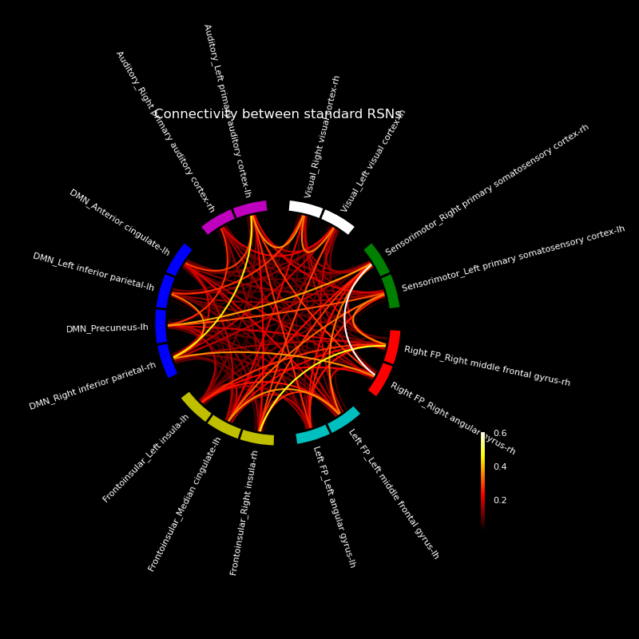

Note
Go to the end to download the full example code
Modified MNE-Python example script to show connectivity between standard resting state network labels obtained from [1].
[1] P. Garcés, M. C. Martín-Buro, and F. Maestú, “Quantifying the Test-Retest Reliability of Magnetoencephalography Resting-State Functional Connectivity,” Brain Connect., vol. 6, no. 6, pp. 448–460, 2016.
Author: Praveen sripad <pravsripad@gmail.com>
Reading inverse operator decomposition from /Users/praveen.sripad/nanna_data/mne_data/MNE-sample-data/MEG/sample/sample_audvis-meg-oct-6-meg-inv.fif...
Reading inverse operator info...
[done]
Reading inverse operator decomposition...
[done]
305 x 305 full covariance (kind = 1) found.
Read a total of 4 projection items:
PCA-v1 (1 x 102) active
PCA-v2 (1 x 102) active
PCA-v3 (1 x 102) active
Average EEG reference (1 x 60) active
Noise covariance matrix read.
22494 x 22494 diagonal covariance (kind = 2) found.
Source covariance matrix read.
22494 x 22494 diagonal covariance (kind = 6) found.
Orientation priors read.
22494 x 22494 diagonal covariance (kind = 5) found.
Depth priors read.
Did not find the desired covariance matrix (kind = 3)
Reading a source space...
Computing patch statistics...
Patch information added...
Distance information added...
[done]
Reading a source space...
Computing patch statistics...
Patch information added...
Distance information added...
[done]
2 source spaces read
Read a total of 4 projection items:
PCA-v1 (1 x 102) active
PCA-v2 (1 x 102) active
PCA-v3 (1 x 102) active
Average EEG reference (1 x 60) active
Source spaces transformed to the inverse solution coordinate frame
Opening raw data file /Users/praveen.sripad/nanna_data/mne_data/MNE-sample-data/MEG/sample/sample_audvis_filt-0-40_raw.fif...
Read a total of 4 projection items:
PCA-v1 (1 x 102) idle
PCA-v2 (1 x 102) idle
PCA-v3 (1 x 102) idle
Average EEG reference (1 x 60) idle
Range : 6450 ... 48149 = 42.956 ... 320.665 secs
Ready.
Not setting metadata
72 matching events found
Setting baseline interval to [-0.19979521315838786, 0.0] s
Applying baseline correction (mode: mean)
Created an SSP operator (subspace dimension = 3)
4 projection items activated
Loading data for 72 events and 106 original time points ...
Rejecting epoch based on EOG : ['EOG 061']
Rejecting epoch based on EOG : ['EOG 061']
Rejecting epoch based on EOG : ['EOG 061']
Rejecting epoch based on EOG : ['EOG 061']
Rejecting epoch based on EOG : ['EOG 061']
Rejecting epoch based on MAG : ['MEG 1711']
Rejecting epoch based on EOG : ['EOG 061']
Rejecting epoch based on EOG : ['EOG 061']
Rejecting epoch based on EOG : ['EOG 061']
Rejecting epoch based on EOG : ['EOG 061']
Rejecting epoch based on EOG : ['EOG 061']
Rejecting epoch based on EOG : ['EOG 061']
Rejecting epoch based on EOG : ['EOG 061']
Rejecting epoch based on EOG : ['EOG 061']
Rejecting epoch based on EOG : ['EOG 061']
Rejecting epoch based on EOG : ['EOG 061']
Rejecting epoch based on EOG : ['EOG 061']
17 bad epochs dropped
Reading labels from parcellation...
read 11 labels from /Users/praveen.sripad/nanna_data/mne_data/MNE-sample-data/subjects/sample/label/lh.standard_garces_2016.annot
read 8 labels from /Users/praveen.sripad/nanna_data/mne_data/MNE-sample-data/subjects/sample/label/rh.standard_garces_2016.annot
Connectivity computation...
Preparing the inverse operator for use...
Scaled noise and source covariance from nave = 1 to nave = 1
Created the regularized inverter
Created an SSP operator (subspace dimension = 3)
Created the whitener using a noise covariance matrix with rank 302 (3 small eigenvalues omitted)
Picked 305 channels from the data
Computing inverse...
Eigenleads need to be weighted ...
Processing epoch : 1 / 55
Extracting time courses for 17 labels (mode: mean_flip)
Processing epoch : 2 / 55
Extracting time courses for 17 labels (mode: mean_flip)
Processing epoch : 3 / 55
Extracting time courses for 17 labels (mode: mean_flip)
Processing epoch : 4 / 55
Extracting time courses for 17 labels (mode: mean_flip)
only using indices for lower-triangular matrix
computing connectivity for 136 connections
using t=0.000s..0.699s for estimation (106 points)
frequencies: 8.5Hz..12.7Hz (4 points)
connectivity scores will be averaged for each band
Using multitaper spectrum estimation with 7 DPSS windows
the following metrics will be computed: Coherence, WPLI
computing connectivity for epochs 1..4
[Parallel(n_jobs=4)]: Using backend LokyBackend with 4 concurrent workers.
[Parallel(n_jobs=4)]: Done 2 out of 4 | elapsed: 0.7s remaining: 0.7s
[Parallel(n_jobs=4)]: Done 4 out of 4 | elapsed: 0.7s remaining: 0.0s
[Parallel(n_jobs=4)]: Done 4 out of 4 | elapsed: 0.7s finished
Processing epoch : 5 / 55
Extracting time courses for 17 labels (mode: mean_flip)
Processing epoch : 6 / 55
Extracting time courses for 17 labels (mode: mean_flip)
Processing epoch : 7 / 55
Extracting time courses for 17 labels (mode: mean_flip)
Processing epoch : 8 / 55
Extracting time courses for 17 labels (mode: mean_flip)
computing connectivity for epochs 5..8
[Parallel(n_jobs=4)]: Using backend LokyBackend with 4 concurrent workers.
[Parallel(n_jobs=4)]: Done 2 out of 4 | elapsed: 0.0s remaining: 0.0s
[Parallel(n_jobs=4)]: Done 4 out of 4 | elapsed: 0.0s remaining: 0.0s
[Parallel(n_jobs=4)]: Done 4 out of 4 | elapsed: 0.0s finished
Processing epoch : 9 / 55
Extracting time courses for 17 labels (mode: mean_flip)
Processing epoch : 10 / 55
Extracting time courses for 17 labels (mode: mean_flip)
Processing epoch : 11 / 55
Extracting time courses for 17 labels (mode: mean_flip)
Processing epoch : 12 / 55
Extracting time courses for 17 labels (mode: mean_flip)
computing connectivity for epochs 9..12
[Parallel(n_jobs=4)]: Using backend LokyBackend with 4 concurrent workers.
[Parallel(n_jobs=4)]: Done 2 out of 4 | elapsed: 0.0s remaining: 0.0s
[Parallel(n_jobs=4)]: Done 4 out of 4 | elapsed: 0.0s remaining: 0.0s
[Parallel(n_jobs=4)]: Done 4 out of 4 | elapsed: 0.0s finished
Processing epoch : 13 / 55
Extracting time courses for 17 labels (mode: mean_flip)
Processing epoch : 14 / 55
Extracting time courses for 17 labels (mode: mean_flip)
Processing epoch : 15 / 55
Extracting time courses for 17 labels (mode: mean_flip)
Processing epoch : 16 / 55
Extracting time courses for 17 labels (mode: mean_flip)
computing connectivity for epochs 13..16
[Parallel(n_jobs=4)]: Using backend LokyBackend with 4 concurrent workers.
[Parallel(n_jobs=4)]: Done 2 out of 4 | elapsed: 0.0s remaining: 0.0s
[Parallel(n_jobs=4)]: Done 4 out of 4 | elapsed: 0.0s remaining: 0.0s
[Parallel(n_jobs=4)]: Done 4 out of 4 | elapsed: 0.0s finished
Processing epoch : 17 / 55
Extracting time courses for 17 labels (mode: mean_flip)
Processing epoch : 18 / 55
Extracting time courses for 17 labels (mode: mean_flip)
Processing epoch : 19 / 55
Extracting time courses for 17 labels (mode: mean_flip)
Processing epoch : 20 / 55
Extracting time courses for 17 labels (mode: mean_flip)
computing connectivity for epochs 17..20
[Parallel(n_jobs=4)]: Using backend LokyBackend with 4 concurrent workers.
[Parallel(n_jobs=4)]: Done 2 out of 4 | elapsed: 0.0s remaining: 0.0s
[Parallel(n_jobs=4)]: Done 4 out of 4 | elapsed: 0.0s remaining: 0.0s
[Parallel(n_jobs=4)]: Done 4 out of 4 | elapsed: 0.0s finished
Processing epoch : 21 / 55
Extracting time courses for 17 labels (mode: mean_flip)
Processing epoch : 22 / 55
Extracting time courses for 17 labels (mode: mean_flip)
Processing epoch : 23 / 55
Extracting time courses for 17 labels (mode: mean_flip)
Processing epoch : 24 / 55
Extracting time courses for 17 labels (mode: mean_flip)
computing connectivity for epochs 21..24
[Parallel(n_jobs=4)]: Using backend LokyBackend with 4 concurrent workers.
[Parallel(n_jobs=4)]: Done 2 out of 4 | elapsed: 0.0s remaining: 0.0s
[Parallel(n_jobs=4)]: Done 4 out of 4 | elapsed: 0.0s remaining: 0.0s
[Parallel(n_jobs=4)]: Done 4 out of 4 | elapsed: 0.0s finished
Processing epoch : 25 / 55
Extracting time courses for 17 labels (mode: mean_flip)
Processing epoch : 26 / 55
Extracting time courses for 17 labels (mode: mean_flip)
Processing epoch : 27 / 55
Extracting time courses for 17 labels (mode: mean_flip)
Processing epoch : 28 / 55
Extracting time courses for 17 labels (mode: mean_flip)
computing connectivity for epochs 25..28
[Parallel(n_jobs=4)]: Using backend LokyBackend with 4 concurrent workers.
[Parallel(n_jobs=4)]: Done 2 out of 4 | elapsed: 0.0s remaining: 0.0s
[Parallel(n_jobs=4)]: Done 4 out of 4 | elapsed: 0.0s remaining: 0.0s
[Parallel(n_jobs=4)]: Done 4 out of 4 | elapsed: 0.0s finished
Processing epoch : 29 / 55
Extracting time courses for 17 labels (mode: mean_flip)
Processing epoch : 30 / 55
Extracting time courses for 17 labels (mode: mean_flip)
Processing epoch : 31 / 55
Extracting time courses for 17 labels (mode: mean_flip)
Processing epoch : 32 / 55
Extracting time courses for 17 labels (mode: mean_flip)
computing connectivity for epochs 29..32
[Parallel(n_jobs=4)]: Using backend LokyBackend with 4 concurrent workers.
[Parallel(n_jobs=4)]: Done 2 out of 4 | elapsed: 0.0s remaining: 0.0s
[Parallel(n_jobs=4)]: Done 4 out of 4 | elapsed: 0.0s remaining: 0.0s
[Parallel(n_jobs=4)]: Done 4 out of 4 | elapsed: 0.0s finished
Processing epoch : 33 / 55
Extracting time courses for 17 labels (mode: mean_flip)
Processing epoch : 34 / 55
Extracting time courses for 17 labels (mode: mean_flip)
Processing epoch : 35 / 55
Extracting time courses for 17 labels (mode: mean_flip)
Processing epoch : 36 / 55
Extracting time courses for 17 labels (mode: mean_flip)
computing connectivity for epochs 33..36
[Parallel(n_jobs=4)]: Using backend LokyBackend with 4 concurrent workers.
[Parallel(n_jobs=4)]: Done 2 out of 4 | elapsed: 0.0s remaining: 0.0s
[Parallel(n_jobs=4)]: Done 4 out of 4 | elapsed: 0.0s remaining: 0.0s
[Parallel(n_jobs=4)]: Done 4 out of 4 | elapsed: 0.0s finished
Processing epoch : 37 / 55
Extracting time courses for 17 labels (mode: mean_flip)
Processing epoch : 38 / 55
Extracting time courses for 17 labels (mode: mean_flip)
Processing epoch : 39 / 55
Extracting time courses for 17 labels (mode: mean_flip)
Processing epoch : 40 / 55
Extracting time courses for 17 labels (mode: mean_flip)
computing connectivity for epochs 37..40
[Parallel(n_jobs=4)]: Using backend LokyBackend with 4 concurrent workers.
[Parallel(n_jobs=4)]: Done 2 out of 4 | elapsed: 0.0s remaining: 0.0s
[Parallel(n_jobs=4)]: Done 4 out of 4 | elapsed: 0.0s remaining: 0.0s
[Parallel(n_jobs=4)]: Done 4 out of 4 | elapsed: 0.0s finished
Processing epoch : 41 / 55
Extracting time courses for 17 labels (mode: mean_flip)
Processing epoch : 42 / 55
Extracting time courses for 17 labels (mode: mean_flip)
Processing epoch : 43 / 55
Extracting time courses for 17 labels (mode: mean_flip)
Processing epoch : 44 / 55
Extracting time courses for 17 labels (mode: mean_flip)
computing connectivity for epochs 41..44
[Parallel(n_jobs=4)]: Using backend LokyBackend with 4 concurrent workers.
[Parallel(n_jobs=4)]: Done 2 out of 4 | elapsed: 0.0s remaining: 0.0s
[Parallel(n_jobs=4)]: Done 4 out of 4 | elapsed: 0.0s remaining: 0.0s
[Parallel(n_jobs=4)]: Done 4 out of 4 | elapsed: 0.0s finished
Processing epoch : 45 / 55
Extracting time courses for 17 labels (mode: mean_flip)
Processing epoch : 46 / 55
Extracting time courses for 17 labels (mode: mean_flip)
Processing epoch : 47 / 55
Extracting time courses for 17 labels (mode: mean_flip)
Processing epoch : 48 / 55
Extracting time courses for 17 labels (mode: mean_flip)
computing connectivity for epochs 45..48
[Parallel(n_jobs=4)]: Using backend LokyBackend with 4 concurrent workers.
[Parallel(n_jobs=4)]: Done 2 out of 4 | elapsed: 0.0s remaining: 0.0s
[Parallel(n_jobs=4)]: Done 4 out of 4 | elapsed: 0.0s remaining: 0.0s
[Parallel(n_jobs=4)]: Done 4 out of 4 | elapsed: 0.0s finished
Processing epoch : 49 / 55
Extracting time courses for 17 labels (mode: mean_flip)
Processing epoch : 50 / 55
Extracting time courses for 17 labels (mode: mean_flip)
Processing epoch : 51 / 55
Extracting time courses for 17 labels (mode: mean_flip)
Processing epoch : 52 / 55
Extracting time courses for 17 labels (mode: mean_flip)
computing connectivity for epochs 49..52
[Parallel(n_jobs=4)]: Using backend LokyBackend with 4 concurrent workers.
[Parallel(n_jobs=4)]: Done 2 out of 4 | elapsed: 0.0s remaining: 0.0s
[Parallel(n_jobs=4)]: Done 4 out of 4 | elapsed: 0.0s remaining: 0.0s
[Parallel(n_jobs=4)]: Done 4 out of 4 | elapsed: 0.0s finished
Processing epoch : 53 / 55
Extracting time courses for 17 labels (mode: mean_flip)
Processing epoch : 54 / 55
Extracting time courses for 17 labels (mode: mean_flip)
Processing epoch : 55 / 55
Extracting time courses for 17 labels (mode: mean_flip)
[done]
computing connectivity for epochs 53..55
[Parallel(n_jobs=4)]: Using backend LokyBackend with 4 concurrent workers.
[Parallel(n_jobs=4)]: Done 3 out of 3 | elapsed: 0.0s remaining: 0.0s
[Parallel(n_jobs=4)]: Done 3 out of 3 | elapsed: 0.0s finished
assembling connectivity matrix
[Connectivity computation done]
(<Figure size 800x800 with 2 Axes>, <PolarAxes: title={'center': 'Connectivity between standard RSNs'}>)
import os.path as op
import numpy as np
import matplotlib.pyplot as plt
import mne
from mne.datasets import sample
from mne.minimum_norm import apply_inverse_epochs, read_inverse_operator
from mne.viz import circular_layout
from mne_connectivity import spectral_connectivity_epochs
from mne_connectivity.viz import plot_connectivity_circle
data_path = sample.data_path()
subjects_dir = op.join(data_path, 'subjects')
fname_inv = op.join(data_path, 'MEG/sample/sample_audvis-meg-oct-6-meg-inv.fif')
fname_raw = op.join(data_path, 'MEG/sample/sample_audvis_filt-0-40_raw.fif')
fname_event = op.join(data_path, 'MEG/sample/sample_audvis_filt-0-40_raw-eve.fif')
# Load data
inverse_operator = read_inverse_operator(fname_inv)
raw = mne.io.read_raw_fif(fname_raw)
events = mne.read_events(fname_event)
# Add a bad channel
raw.info['bads'] += ['MEG 2443']
# Pick MEG channels
picks = mne.pick_types(raw.info, meg=True, eeg=False, stim=False, eog=True,
exclude='bads')
# Define epochs for left-auditory condition
event_id, tmin, tmax = 1, -0.2, 0.5
epochs = mne.Epochs(raw, events, event_id, tmin, tmax, picks=picks,
baseline=(None, 0), reject=dict(mag=4e-12, grad=4000e-13,
eog=150e-6))
if not epochs.preload:
epochs.load_data()
# Compute inverse solution and for each epoch. By using "return_generator=True"
# stcs will be a generator object instead of a list.
snr = 1.0 # use lower SNR for single epochs
lambda2 = 1.0 / snr ** 2
method = "MNE" # use dSPM method (could also be MNE or sLORETA)
stcs = apply_inverse_epochs(epochs, inverse_operator, lambda2, method,
pick_ori="normal", return_generator=True)
# Get labels for FreeSurfer 'aparc' cortical parcellation with 34 labels/hemi
labels = mne.read_labels_from_annot('sample', parc='standard_garces_2016',
subjects_dir=subjects_dir)
labels = [lab for lab in labels if not lab.name.startswith('unknown')]
label_colors = [label.color for label in labels]
# Average the source estimates within each label using sign-flips to reduce
# signal cancellations, also here we return a generator
src = inverse_operator['src']
label_ts = mne.extract_label_time_course(stcs, labels, src, mode='mean_flip',
return_generator=True)
fmin = 8.
fmax = 13.
sfreq = raw.info['sfreq'] # the sampling frequency
con_methods = ['coh', 'wpli']
con = spectral_connectivity_epochs(
label_ts, method=con_methods, mode='multitaper', sfreq=sfreq, fmin=fmin,
fmax=fmax, faverage=True, mt_adaptive=True, n_jobs=4)
# con is a 3D array, get the connectivity for the first (and only) freq. band
# for each method
con_res = dict()
for method, c in zip(con_methods, con):
con_res[method] = c.get_data(output='dense')[:, :, 0]
# Now, we visualize the connectivity using a circular graph layout
# First, we reorder the labels based on their location in the left hemi
label_names = [label.name for label in labels]
from jumeg import get_jumeg_path
yaml_fname = get_jumeg_path() + '/data/standard_garces_rsns_grouping.yaml'
import yaml
with open(yaml_fname, 'r') as f:
xlabels = yaml.safe_load(f)
# the yaml file has been hand curated to follow the same order as label_names
# if not the node order has to be changed appropriately
node_order = list()
node_order.extend(label_names)
group_bound = [len(list(key.values())[0]) for key in xlabels]
group_bound = [0] + group_bound
group_boundaries = [sum(group_bound[:i+1]) for i in range(len(group_bound))]
group_boundaries.pop()
rsn_colors = ['m', 'b', 'y', 'c', 'r', 'g', 'w']
group_bound.pop(0)
label_colors = []
for ind, rep in enumerate(group_bound):
label_colors += [rsn_colors[ind]] * rep
assert len(label_colors) == len(node_order), 'Number of colours do not match'
from mne.viz.circle import circular_layout
node_angles = circular_layout(label_names, label_names, start_pos=90,
group_boundaries=group_boundaries)
# Plot the graph using node colors from the FreeSurfer parcellation.
plot_connectivity_circle(con_res['wpli'], label_names, n_lines=300,
node_angles=node_angles, node_colors=label_colors,
title='Connectivity between standard RSNs')
# plt.savefig('circle.png', facecolor='black')
Total running time of the script: ( 0 minutes 2.858 seconds)